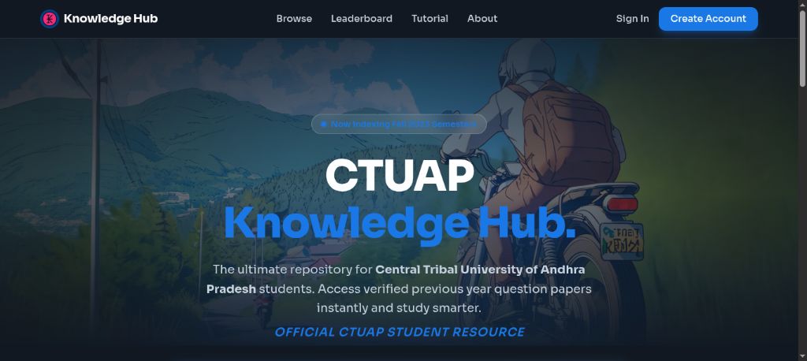

SOFTWAREENGINEER.AI & SECURITYRESEARCHER.
> Building full-stack applications with a focus on Artificial Intelligence and Secure Software Development._

INTEL _LOGS
Archived records of system operations, engineering roles, and security/AI deployments.
Generative AI Intern
- >I learned how Generative AI works internally, including how modern models like Transformers and LLMs generate text, images, and ideas.
- >I explored different generative systems such as ChatGPT, Grok, and V-series models to understand how they create new content from patterns.
- >I gained clarity on diffusion models, GANs, and how prompt engineering shapes the output and creativity of these AI systems.
DEVELOPMENT _STACK
SECURITY _AUDIT
RECENT_BUILDS

KNOWLEDGE_HUB
A comprehensive educational platform for CTUAP students. Solves study material fragmentation by providing a centralized dashboard where users can manage, download, and view Previous Year Question papers and academic notes.

INDUSTRIAL_ECOMMERCE
This storefront platform is made for people who sell equipment. It helps businesses buy things from each other easily. The platform has a system for finding products, a safe way to manage orders and a main control panel. This control panel lets you see all your orders and what you have in stock at the time. The industrial equipment sales platform is really helpful, for managing a lot of orders and keeping track of your industrial equipment inventory.
FIELD_REPORTS
LOG_ID: 2026_INDEX_VOL_01
SOCIAL _TRANSMISSIONS
Real-time feed synced from encrypted satellite downlinks of professional channels.
Aakash Modiverified
in/aakashmodi-softwaredev
🚀 Officially launched KnowledgeHub! A secure, centralized dashboard solving study material fragmentation for CTUAP students.
✨ Built from scratch using React, Python Flask, and MySQL.
🔗 Read full announcement and view reactions: https://www.linkedin.com/in/aakashmodi-softwaredev
Aakash Modiverified
in/aakashmodi-softwaredev
🧠 Deep dive into Transformers, LLMs, Diffusion models, and GANs.
🎓 Successfully completed my Generative AI Internship at Techverse Innovations Pvt. Ltd.!
🔗 View full professional summary: https://www.linkedin.com/in/aakashmodi-softwaredev
Aakash Modiverified
@AakashModi1750_
🚀 Just pushed the production build of my new Cyber Portfolio!
💻 Features interactive terminal overlay, decryption modal popups, verified skill matrices, and live writeups.
🔗 Explore the decrypted broadcast feed: https://x.com/AakashModi1750_